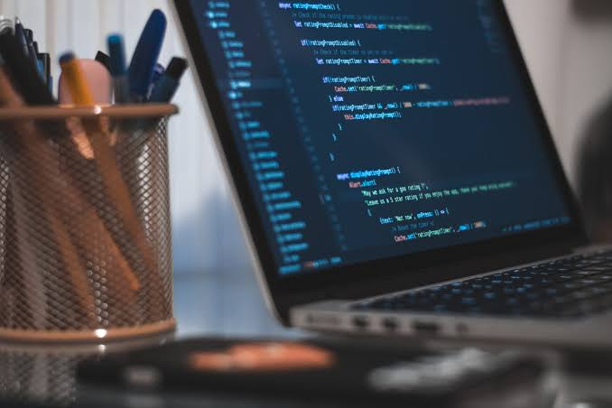

About Me
My name is Adan Hassan, a second-year Information Technology student at UMMA University in Kajiado, Kenya. I’m passionate about tech and driven by curiosity to explore real-world problem solving through programming and networks. Although I’m still a student, I dedicate my free time to learning beyond the classroom — building projects, sharpening my skills, and helping others grow in tech as I grow too..
My Skills
C++ Programming
I have studied C++ as part of my academic curriculum and used it to understand the foundations of programming, such as control structures, functions, arrays, and object-oriented programming (OOP). I can write structured code and debug it efficiently..
Python
I’ve just started learning Python on my own through online resources. I am focusing on writing scripts, understanding syntax, and exploring how Python is used in areas like automation, data analysis, and app development..
Networking
I have a strong foundation in computer networking, including knowledge of protocols, IP addressing, subnetting, and setting up LANs. I am comfortable using basic Cisco Packet Tracer simulations and working with switches and routers in practical scenarios..
Tech Inspiration

Contact
Email: khadijaibren7@gmail.com
Phone: +254721608912
GitHub: Adesh7711